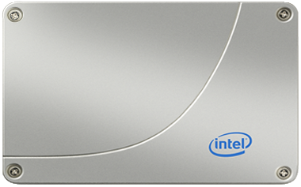

"SSD reboot your thinking"...

I started to look into Solid State Drives while studying "id Tech5": The 3D engine powering Rage by id Software. One of
the numerous innovations is called MegaTexture (also known as "Sparse Virtual Texturing"). It is a technology that allows artists to use gigabytes of texture without worrying about
running out of RAM at runtime. The engine detects what is visible and then streams the necessary texture from
the storage drive up to the Video RAM where it is used for rendition.
The graphic result looks pretty good running on
a Hard Disk Drive
but it flies when used with a Solid State Drive.
Director of R&D John Carmack
said a few words about how SSD performances "reboot" the old dichotomy: "RAM" Vs "Storage Drive".
After much reading about TRIM support, SandForce and performances degradations I opted for an OCZ Vertex 3 and an Intel serie 520 that
I promptly installed in my MacPro. Here are my impressions after one week.
WOW !!!
Performances are PHENOMENAL.
If you are a professional developer and you are not using Solid State Drive you are losing time on a daily basis.
Swapping from HDD to SSD is the biggest performance boost I have experimented as a programmer and I cannot encourage you more to go for it as soon as possible.
- XCode loads instantly.
- Eclipse takes 2 seconds to startup.
- Compiling Doom3 from scratch with Visual Studio 2010 take 3 minutes (Just don't forget the /MP flag).
- Compiling Doom3 from scratch with XCode 4 takes 2 minutes.
- Even the notorious mammoth Adobe Photoshop loads in 1 seconds.
Not only programs go faster, the boot time is reduced considerably. The MacPro I am using can reboot under Windows 7 within 20 seconds.
How to mount a 2.5" SSD on a 3.5" MacPro.
It is not that easy to mount a 2.5" SSD drive since the racks of the MacPro expect a 3.5" HDD with vertical screws and leftmost SATA location.
Some people just seem
to ignore the problem:

What you see here is an SSD mounted horizontally with all its weight resting on its SATA connector. If you know what "moment of force" is you know it cannot be good on the long run. I hope they did not have to carry the MacPro too much.
Some try to be creative with more or less esthetic success:
The old duck-tape trick:
The more elegant pierced CD shaped adapter:
2.5" SSD Adapter for MacPro.
Needless to say I felt fortunate to find an adapter that would meet the MacPro vertical screwing/leftmost connector requirements: AdaptaDrive.